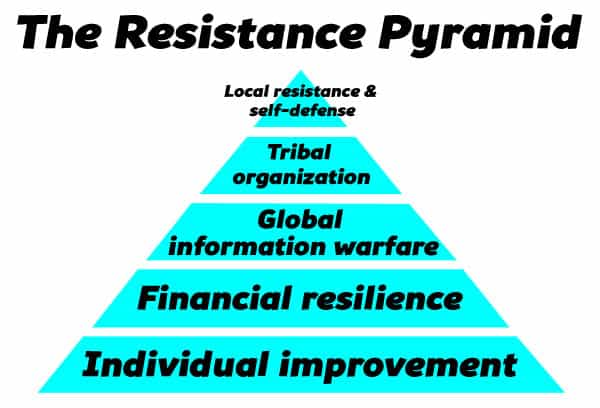
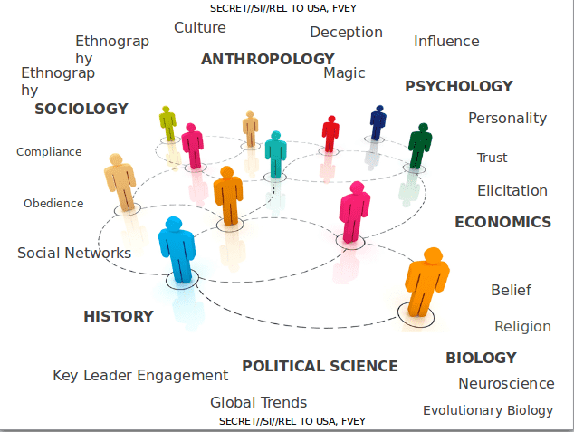
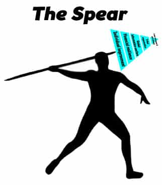
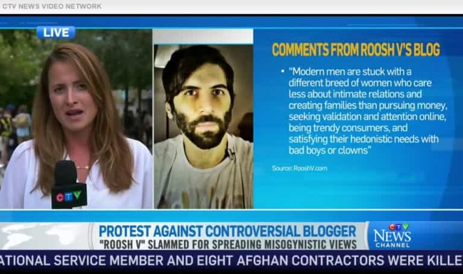

Daryush "Roosh" Valizadeh created ROK in October 2012. You can visit his blog at RooshV.com or follow him on Twitter and Facebook.


A week doesn’t go by without a man asking me how he can fight back. He’s ready to take action but is not sure how. For the longest time I’ve been thinking about this problem, because while we do want to win, we don’t want to lose our jobs from witch hunts or end up in jail for a trivial reason. There’s a balance to be struck between maintaining our freedom (self-preservation) and enacting the change we want to see in our city or society.
I’ve developed the resistance pyramid as a hierarchy of action to becoming a force that resists state or mob efforts to remove your liberties or displace you from your home. Lower levels on the hierarchy should be completed before attempting the higher levels.

It’s not wise to send an untrained civilian into battle. He must first realize his masculine potential, understand his strengths, manage his weaknesses, and face the fears from his own anxieties and existential questions about life. A man must become physically strong, mentally strong, and self-aware of his reality.
It may be hard for some of you to believe, but learning how to sleep with a lot of women put me on this path. I dealt with my anxieties, learned objective truths of the world, improved my bodily strength, steeled my will and resolve, and built up the courage to face difficult situations that included defending my “misogynist” views against the establishment.
Every man has a unique path to reaching his potential, but for a lot of men, game is a reliable device that allows him to do so. Whatever method you pick, you must find a way to develop your physical and mental abilities above that of an average man. By the end of this stage, you will have the strength to begin fighting.
In the modern era, you must earn money in order to have shelter, food, clothing, and other essentials like internet and basic communication devices. Without money, you will not be able to live in a proper environment that allows you to develop your strengths.
But merely having a job is not enough, because that job is now your number one weakness when your enemies decide to come after you. Since corporations are sensitive to even tiny amounts of bad publicity, you will become a target for false accusations by liberal activists that intend to remove you from employment. In fact, this is their number one method of going after those whom they disagree with. You must therefore create proper defenses against such an attack.
There are various strategies to steel your cash flow:
Even though my cash flow is continually attacked by my enemies, they have not disrupted my operations because I have so many different sources of income with backup plans for replacing them. There are multiple ways to sell electronic books (or physical goods), receive donations, serve advertising, and hold events that if they shut down one avenue I’ll just open another. It took me well over five years to achieve this level of resilience. Start today, and build your financial bunker one step at a time.

During individual improvement, you began making thought crimes against the official egalitarian narrative. You will now accelerate your learning and disseminate truth through participation on masculine sites, forums, and Youtube channels while observing and participating in online raids against SJW’s and feminists. This is where you learn how the system works, how truth is concealed, how lies are disseminated, who your enemy is, and how to cause them pain. You also begin finding communities of men who you can trust.
Many men participate in global information warfare without taking the first step of individual improvement. They are often called keyboard jockies. The problem with them is that they are fighting out of boredom or to alleviate their insecurities, not because they are part of a movement that has goals which lift up men. When the fighting gets especially tough, they will be the first to drop out since they lack the mental conviction. They are essentially role-playing actors.
By the end of this stage, your individual strength, financial resilience, and warfare knowledge will allow you to successfully defend yourself against attacks that arrive right at your front door.
The next step for a man is to link up to other men within his city. We currently take for granted that the internet is always on, but previous internal disturbances like with the Arab Spring show that governments will cut off the internet and cell phone service in times of crisis or revolt against their rule, and in a case like 9/11, electronic communications may be down in certain areas. What will you do right now if the internet gets shut off and you can’t get in touch with your existing allies? You’re probably screwed.
Last year I started the tribal meeting to allow for local organization. In times of calm, it will resemble a social happy hour, but it can be quickly weaponized into a force that keeps its members safe. It’s important to realize that you must have your tribe assembled before war comes to you, because after that it will be too late to organize. The tribe can also experiment with small resistance actions that don’t put their existence in jeopardy, such as disrupting social justice or feminist protests or causing difficultly for corrupt local politicians.
It is extremely hard to stop groups of organized men. This is why the worldwide leftist establishment threw a temper tantrum against tribal meetup day in February 2016. Once your tribe is organized, you’ll now have the strength to fight, the knowledge on how to fight, and a team of men to fight with.
The pyramid now turns on its edge and becomes a spear.

All the pieces are in place for you to react to enemy attacks on yourself, your family, and your fellow tribesmen. I cannot give you specific advice on how to fight back, because each battle will be different, but I can say that if you’ve made it to this last stage, you will be able to cause devastating pain to the enemy while posing an existential threat to the establishment.
Your resistance may have components that are seen as illegal, so at this stage you now open yourself up to prosecution by the state. It’s here that you must decide if the pain from the oppression you’re facing is greater than a possible loss of your freedom or life. If you choose not to fight, you must live with that decision, and if you choose to fight, you must be prepared to go all the way. The gods will not smile down on men who only go halfway.
The one mistake that men make is wanting to change their entire nation or world. They try to run before they can walk. I hate to break your heart, but you will not change the world. Your ideas will not become national policy or get you a job as the personal adviser to the President. As a man who has had significant world influence, I can state this with confidence because at the end of the day I’m still just a man with a web site, but I can confidently state that you can successfully change yourself and the men near you. You can affect your most immediate world, meaning your local community, neighborhood, and town. You may not know this because you have yet to try.
Global change is out of our hands, at least for the time being, but local change is not. Instead of lamenting of the worldwide changes concerning feminism or immigration, focus instead on local changes that can limit harmful effects upon you and your tribe.

The first time that I used the spear was in Canada when they tried to shut down my speeches and hunt me down on the streets. I did not have a pre-formed local organization in Canada, but due to my internet presence, I was able to make one on-the-fly. I created and led operations to attack individual SJW’s, I maintained propaganda campaigns, I hired local protection to keep me safe, and I used guerrilla tactics to make sure the events proceeded as planned.
A Montreal police officer did state to me on the telephone that he believes I participated in assault by throwing my drink at one of my attackers, and “legal experts” hired by the media said I committed “illegal harassment.” I fully deny all wrongdoing, but things did get dirty and I could not say with 100% confidence during the thick of it that I would not be charged with a crime. When you enter battle, your actions and those of your enemy will enter gray areas or outright illegality.
The decision to enter local battle should not be taken lightly. Every time a Muslim terrorist decides to blow something up, he mentally accepts that his death may take place before deciding to continue. You must also accept the worst case scenario (imprisonment, injury, death) in your battle planning. If you can accept that worst case scenario, that likely means you are facing a battle that is a clear and present threat to your existence or well-being. In that case, proceeding may be the right decision, but only you can decide for sure. I was ready to go to jail in Canada, and did not fear it, so I knew that fighting back against the threat I faced was aligned with my individual nature and capabilities.
The pyramid I’ve described above will not create a revolution that marches on the capital to demand regime change. It will not cause men to “rise up” with butcher knives and clubs. It will instead allow a man to reach his mental and physical potential, give him self-awareness of the forces he’s up against, learn how he’s being attacked, learn to defend himself against attack, learn how to cause his enemy harm, forge local bonds with men he can rely on in case of national or local disturbances, and develop the ability to fight battles that help his community and defend himself, his tribe, and his family.
I did not devise this pyramid lightly, because I know that a man who follows it can hurt himself or even be killed, so I advise only what I’ve personally gone through and what I will certainly go through in the future. Aside from getting into entertaining internet scraps, I will certainly not invent or contrive a fight that puts myself or my tribe in danger. The stakes must be high and they must be real.
I will not advise men to suddenly pick up arms and start killing their enemy and taking towns, so if this is the movement you want, you will have to look elsewhere. Our heaviest resistance should be locally based and from a position of self-defense. Only if arms have been raised against us can we even consider likewise. Until then, we must train, prepare, and connect with men that we can trust and bond with, because I’m certain that there are difficult times ahead of us.
This article was originally published on Roosh V.
Read Next: You’re Either A Globalist Or A Nationalist